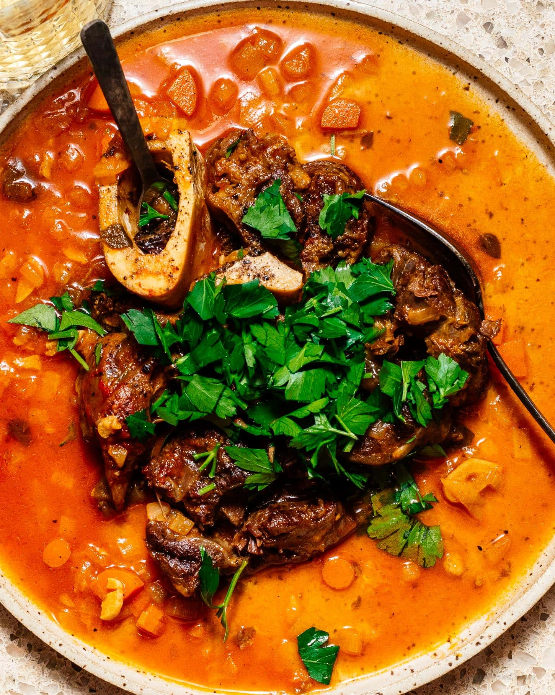

Osso Buco
A hearty Italian dish made by braising veal shanks in a rich stock with white wine and tomatoes
Because it’s slow braised on the bone, the bone marrow infuses the sauce and gives it an incredible richness and flavor
How can you not love a slow braised, melt in your mouth beef shank in a beefy, bone marrow-y tomato sauce?
Section 1: Ingredients
- 1/4 medium onion chopped
- 1 small carrot chopped
- 2 cloves garlic sliced
- 1 slice veal or beef shank about 1 pound
- 1 cup white wine Pinot grigio/Italian white preferred
- 1-2 sprigs fresh herbs
Section 2: Instructions
- Roughly chop your onion, carrots, and garlic.
- Preheat your Instant Pot to saute high and add 1-2 tablespoons oil. Pat dry your shanks and season generously on both sides with salt and pepper.
- Once your instant pot is hot enough, brown the shanks 1-2 minutes per side.
- Remove the shank and add on onion, carrots, and garlic. Cook until soft - 2-4 minutes.
- Add the wine and deglaze, scraping the brown bits with a wooden spoon. Reduce until about half the wine is left - 2-3 minutes.
- Add passata, herbs if using, and the shanks to the pot. Set pressure to high and braise for 1 hour. Quick release when done and serve, garnish with grated Grana Padano or Parmigiano Reggiano cheese, red pepper flakes, and flat leaf parsley as desired.
NOTES:
- Veal vs beef shank: The default meat choice for osso buco is veal, but it's pretty hard to find veal shank. It's worth looking for if you want to stay true to the original. You should be able to find it at your neighborhood butcher shop or major supermarket. Beef tastes as good (if not better) though and is far easier to find. It’s even often cheaper, even though veal should technically be a lower-cost meat.
- White wine: Wine adds a complexity and authenticity to the dish that is impossible to replace. If you need to be alcohol-free, you can switch it out for sodium free chicken stock.